Aqui aprenderas lo siguiente
Aprenderas cuales instrumentos existen, sus nombres, sus formas, como tambien parte de la historia como: Quien lo invento, Cuando y donde. Como tambien aprenderas a distinguir los acordes como lo son sus formas, sus nombres, posiciones y sus respectivas aleaciones


ACORDES
Los acordes son conjuntos de dos o más notas tocadas al mismo tiempo. Los acordes más básicos están formados por tres notas. Están construidos alrededor de su nota fundamental (la nota de partida). El resto de las notas de un acorde están determinadas por la calidad del mismo. Al igual, un acorde consiste en un conjunto de dos o más notas diferentes y que constituyen una unidad armónica. En determinados contextos, un acorde también puede ser percibido como tal aunque no suenen todas sus notas.
¿Que son? Un acorde es mayor (también se dice que es de modalidad mayor o de modo mayor) cuando, estando en estado fundamental, es decir, no siendo ninguna inversión, la distancia interválica entre el tono o grado fundamental del acorde y la tercera corresponde a una tercera mayor, es decir, a dos tonos.
¿Que son? Un acorde es mayor (también se dice que es de modalidad mayor o de modo mayor) cuando, estando en estado fundamental, es decir, no siendo ninguna inversión, la distancia interválica entre el tono o grado fundamental del acorde y la tercera corresponde a una tercera mayor, es decir, a dos tonos.
¿Que son? Un acorde es mayor (también se dice que es de modalidad mayor o de modo mayor) cuando, estando en estado fundamental, es decir, no siendo ninguna inversión, la distancia interválica entre el tono o grado fundamental del acorde y la tercera corresponde a una tercera mayor, es decir, a dos tonos.
Definicion e imagenes de cada acorde
Do
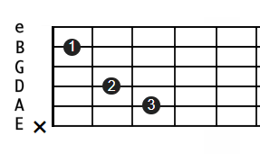La tonalidad de Do mayor se basa en una escala mayor sobre la nota Do, que consiste en las notas Do, Re, Mi, Fa, Sol, La y Si. Su armadura no contiene bemoles ni sostenidos. Su relativa menor es La menor, y su tonalidad homónima es Do menor.
Dom
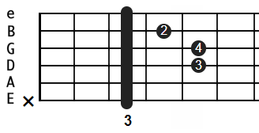La tonalidad de Do menor es la que consiste en la escala menor de Do, y contiene las notas Do, Re, Mi bemol, Fa, Sol, La bemol, Si bemol y Do. Su armadura tiene tres bemoles. Su tonalidad relativa es Mi bemol mayor, y su tonalidad homónima es Do mayor.
Do#
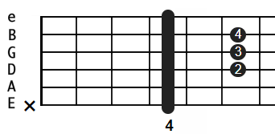Do sostenido mayor es la tonalidad que consiste en la escala mayor de Do sostenido, y contiene las notas Do sostenido, Re sostenido, Mi sostenido, Fa sostenido, Sol sostenido, La sostenido y Si sostenido. Su armadura contiene 7 sostenidos.
Do7
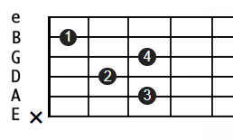El acorde de Do (C) mayor séptima contiene la primera, la tercera, la quinta y la séptima nota de la escala de Do (C) mayor. En una escala menor, esto forma un acorde de séptima menor. Puedes construir un acorde de Do menor séptima de la forma siguiente: Do (C) (la fundamental).
RE
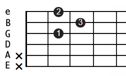La tonalidad de Re mayor consiste en la escala mayor de Re, y contiene las notas Re, Mi, Fa sostenido, Sol, La, Si, do sostenido y Re. Su armadura de clave contiene 2 sostenidos. Su tonalidad relativa es Si menor, y su tonalidad homónima es Re menor.
Rem
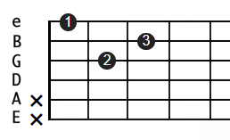Re menor es la tonalidad que consiste en la escala menor de Re, y contiene las notas Re, Mi, Fa, Sol, La, Si bemol, Do y Re. Su armadura contiene 1 bemol. Las alteraciones para las versiones melódicas y armónicas son escritas si son necesarias. Su tonalidad relativa es Fa mayor, y su tonalidad homónima es Re mayor.
Re#
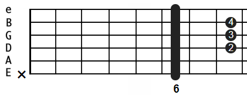Re sostenido menor es la tonalidad de Re sostenido, en modalidad de escala menor, entre las que elegimos la que contiene las notas Re sostenido, Mi sostenido Fa sostenido, Sol sostenido, La sostenido, Si, Do sostenido y Re sostenido. Su armadura contiene 6 sostenidos.
Re7
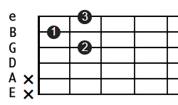D7 o Re7, conocido como Re séptima es un acorde utilizado en el jazz debido a su sonido disonante, utilizado generalmente como un acorde dominante en una sucesión. Este acorde se considera una tétrada.
Mi
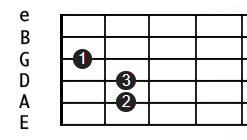La tonalidad de Mi mayor es la que consiste en la escala mayor de la nota musical Mi, y contiene las notas Mi, Fa sostenido, Sol sostenido, La, Si, Do sostenido, Re sostenido y Mi.Su armadura contiene 4 sostenidos. Su tonalidad relativa es Do sostenido menor, y su tonalidad homónima es Mi menor.
Mim
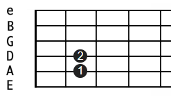La tonalidad de Mi menor consiste en la escala menor de Mi, y contiene las notas Mi, Fa sostenido, Sol, La, Si, Do, Re y Mi. Su armadura de clave contiene un solo sostenido. Su tonalidad relativa es Sol mayor, y su tonalidad homónima es Mi mayor
MiB
La tonalidad de Mi bemol mayor es la que contiene los siete sonidos de la escala mayor de Mi♭. Su armadura tiene tres bemoles: Si, Mi y La.Su relativo menor es Do menor, su tonalidad homónima es Mi♭ menor, y sus tonalidades enarmónicas son Re♯ mayor y Fa mayor.
Mi7
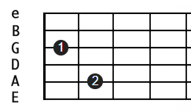El acorde Mi7 está formado por las notas Mi, Sol#, Si y Re que realizan la función de tónica, tercera mayor, quinta justa y séptima menor.
Fa
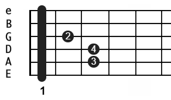Su tonalidad relativa es Re menor, y su tonalidad homónima es Fa menor. Contiene los acordes Fa mayor, Sol menor, La menor, Si bemol Mayor, Do Mayor, Re menor y Mi disminuido.
Fam
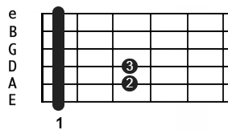Fa menor es la tonalidad que consiste en la escala menor de Fa, y contiene las notas Fa, Sol, La bemol, Si bemol, Do, Re bemol, Mi bemol y Fa. Su armadura contiene 4 bemoles. Su tonalidad relativa es la bemol mayor, y su tonalidad homónima es Fa mayor.
Fa#

Fa sostenido mayor es la tonalidad que consiste en la escala mayor de Fa sostenido, y contiene las notas Fa sostenido, Sol sostenido, La sostenido, Si natural, Do sostenido, Re sostenido, Mi sostenido, Fa sostenido. Su armadura contiene 6 sostenidos.
Fa7
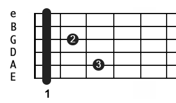Fa7 en la notación española, o mejor conocido como Fa séptima es aquel acorde que consiste de la nota tónica, la tercera mayor, la quinta justa y la séptima menor. Es un acorde muy utilizado en géneros como el jazz, el rock y el pop como un acorde para generar tensión en una pieza musical.
Sol
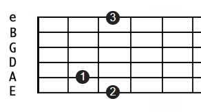La tonalidad de Sol mayor consiste en la escala mayor de Sol, y contiene las notas Sol, La, Si, Do, Re, Mi, Fa sostenido y Sol. El acorde de tónica es Sol mayor. Su armadura de clave contiene 1 sostenido. Su tonalidad relativa es Mi menor, y su tonalidad homónima es Sol menor.
Solm
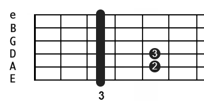La tonalidad de Sol menor es la que consiste en la escala menor de Sol, y contiene las notas Sol, La, Si bemol, Do, Re, Mi bemol, Fa y Sol. Su armadura de clave contiene 2 bemoles. Su tonalidad relativa es Si bemol mayor, y su tonalidad homónima es Sol mayor.
Sol#
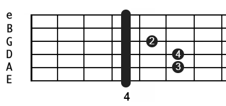Sol sostenido menor es la modalidad que consiste en la escala menor de Sol sostenido, y contiene las notas Sol sostenido, La sostenido, Si, Do sostenido, Re sostenido, Mi, Fa sostenido y Sol sostenido;. Su armadura contiene 5 sostenidos.
Sol7
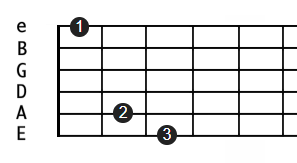El acorde G7 es un acorde de séptima o tetrada. Este acorde se forma a partir del acorde mayor Sol y la séptima menor. Por lo tanto, las cuatro notas de acorde son la fundamental, la tercera mayor, la quinta justa y la séptima menor.
La
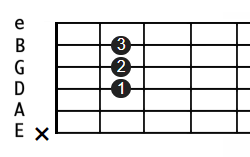La mayor es la tonalidad que consiste en la escala mayor de La, y contiene las notas La, Si, Do sostenido, Re, Mi, Fa sostenido, Sol sostenido y La. Su armadura contiene tres sostenidos. Su tonalidad relativa es Fa sostenido menor, y su tonalidad homónima es la menor.
Lam
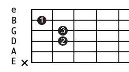La menor es la tonalidad que consiste en la escala menor de La, y contiene las notas La, Si, Do, Re, Mi, Fa, Sol y La. Su tonalidad relativa es Do mayor, y su tonalidad homónima es La mayor.
La#
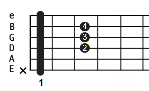La sostenido menor es la tonalidad que consiste en la escala menor de La sostenido, y contiene las notas La sostenido, Si sostenido, Do sostenido, Re sostenido, Mi sostenido, Fa sostenido, Sol sostenido y La sostenido. Su armadura contiene 7 sostenidos.
La7
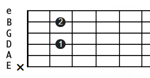A este acorde se le conoce también como el dominante de Re mayor. Solo hay que poner 2 dedos, las demás cuerdas son al aire y el acorde se coloca de la siguiente forma: Dedo 1, cuerda 4, traste 2.
Si
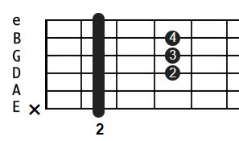Si mayor es la tonalidad que consiste en la escala mayor de Si, y contiene las notas Si, Do sostenido, Re sostenido, Mi, Fa sostenido, Sol sostenido, La sostenido y Si. Su armadura contiene 5 sostenidos. Su tonalidad relativa es Sol sostenido menor, y su tonalidad homónima es Si menor.
Sim
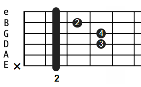Si menor es la tonalidad que consiste en la escala menor de Si, y contiene las notas Si, Do sostenido, Re, Mi, Fa sostenido, Sol, La y Si. Su armadura contiene 2 sostenidos. Su relativo mayor es Re mayor, y su tonalidad homónima es Si mayor.
SiB
La tonalidad de Si bemol mayor es la que contiene los siete sonidos de la escala mayor de Si♭. Su armadura tiene dos bemoles: Si y Mi.Su relativo menor es Sol bemol menor, su tonalidad homónima es Si bemol menor y su tonalidades enarmónicas son La sostenido mayor y Do doble bemol mayor.
Si7

B7 o Si7, conocido como Si séptima, es un acorde muy utilizado en los géneros como el jazz o el rock, debido a su sonido armonioso y melódico. Está conformado por la nota tónica, la tercera mayor, la quinta justa y la séptima menor de la escala de Si.